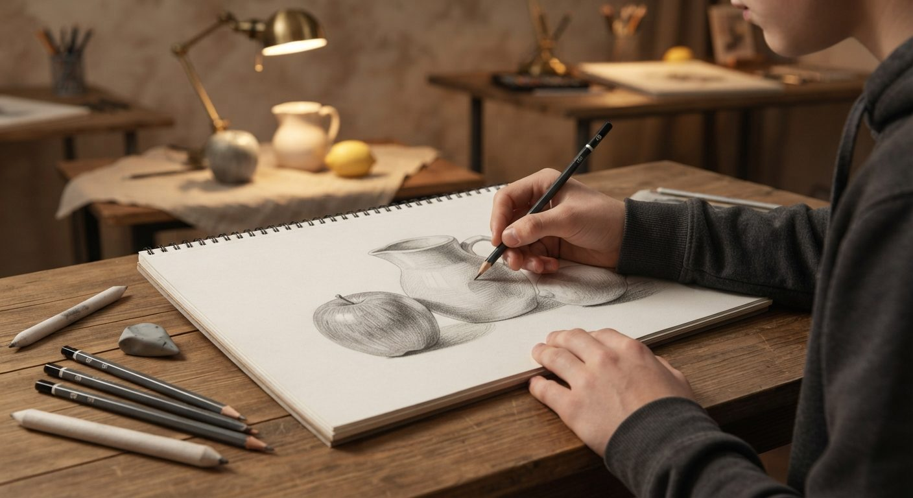
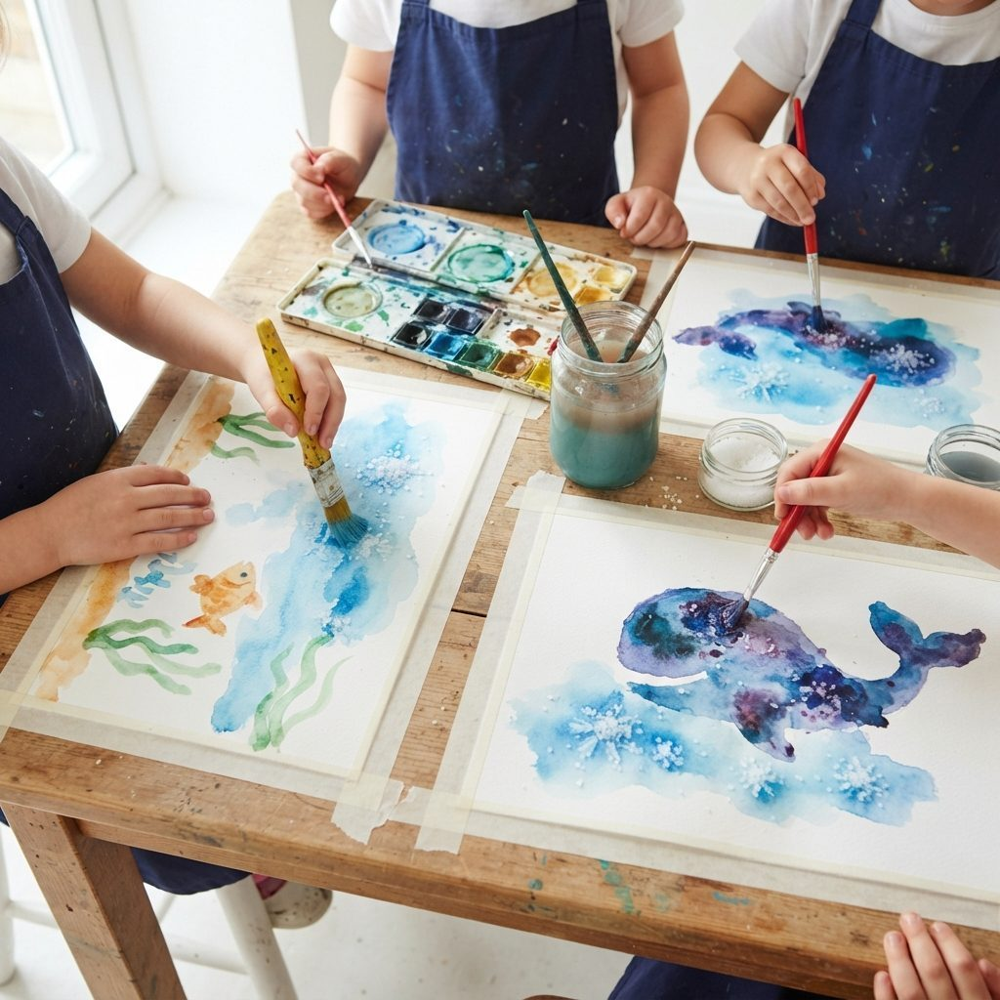
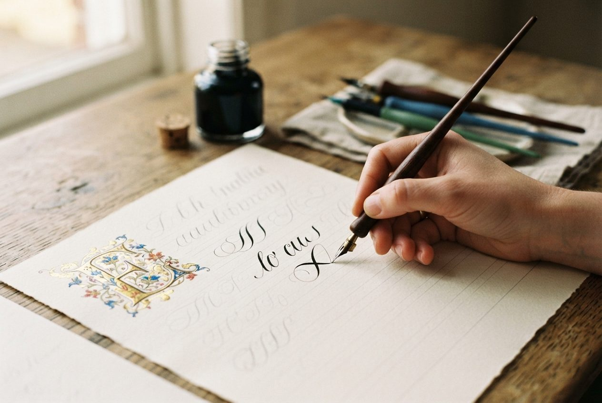
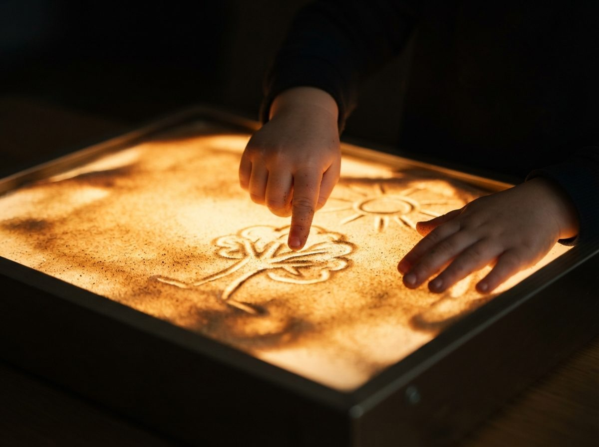

Theme 1 · Autumn term, first half
Drawing Foundations
Every artist starts here. Children learn to control a pencil, to see light and shadow, and to draw what is really in front of them rather than what they think is there. These skills carry into every theme that follows.
MaterialsGraphite pencils HB to 6B, willow charcoal, kneadable eraser, blending stump, cartridge paper
Line weight and mark-makingFive-step tonal scaleLight, shadow and reflected lightConstruction drawing from shapesContour and blind contourMeasuring proportions with a pencilTexture and pattern
Week by week- Line and mark-making: hatching, cross-hatching, stippling
- Tone: turning a flat circle into a 3D sphere
- Construction: building objects and animals from simple shapes
- Observation: contour drawing and measuring proportions
- Main project: still life from real objects
- Finish, mini exhibition and take it home
Main project by age5 to 7: A bowl of fruit in coloured pencil, with a shadow8 to 11: A three-object still life in pencil and charcoal12 to 16: An A3 still life with a single light source and full tonal range
Theme 2 · Autumn term, second half
Perspective and Portrait
Two of the skills children most want to master. First they learn how to make a street or a room look deep and real. Then they learn the proportions of the face and draw a portrait that actually looks like someone.
MaterialsPencils, rulers, coloured pencils, hand mirrors, reference photos
Horizon line and vanishing pointOne-point perspectiveTwo-point perspectiveProportions of the faceEyes, nose, mouth and hairExpression and character
Week by week- One-point perspective: a road, a room or a corridor
- Two-point perspective: buildings on a street corner
- The face map: where the eyes, nose and mouth really sit
- Features up close: eyes, noses, mouths and hair
- Main project: self-portrait from a mirror or photo
- Finish, mini exhibition and take it home
Main project by age5 to 7: A colourful self-portrait using the face map, and a road to the horizon8 to 11: A pencil self-portrait with correct proportions, and a one-point street scene12 to 16: A tonal A3 portrait from life or photo, set against a two-point perspective background

Theme 3 · Spring term, first half
Watercolour
Colour theory and the magic of water. Children learn to mix colours, control washes and use techniques like salt and wax resist, building up to a layered landscape or botanical painting.
MaterialsWatercolour pans, round brushes, 300gsm watercolour paper, wax crayons, coarse salt
The colour wheelWarm and cool coloursWet-on-wet and wet-on-dryGraded washesSalt and wax resistLayering and glazing
Week by week- The colour wheel and mixing
- Warm and cool colours
- Technique cards: wet-on-wet, dry brush, salt, wax resist
- Skies, water and horizons
- Main project: layered landscape or botanical study
- Finish, mini exhibition and take it home
Main project by age5 to 7: An under-the-sea scene with wax resist and salt8 to 11: A lakeside landscape at sunset12 to 16: A botanical study built up in transparent glazes
Theme 4 · Spring term, second half
Acrylic and the Masters
Bold, opaque paint and the artists who changed how we see. Children study the brushwork of Van Gogh, the composition of Hokusai and the light of Monet, then paint a place near home in the style of their favourite.
MaterialsAcrylic paints, flat and round brushes, palette knives, canvas boards
Mixing and opacityExpressive brushworkImpasto textureCompositionPainting lightArt history
Week by week- Getting to know acrylic: mixing and layering
- Van Gogh: movement and brushwork
- Hokusai: line and composition
- Monet: light and colour
- Main project: our town through a master's eyes
- Finish, mini exhibition and take it home
Main project by age5 to 7: A swirling starry night over their own street8 to 11: A local landmark painted in a master's style12 to 16: A local scene on canvas board, with a short artist's statement

Theme 5 · Summer term, first half
Calligraphy and Lettering
The art of beautiful letters. Children learn letter shapes and spacing, brush lettering with thick and thin strokes, the italic hand with a broad pen, and decorated initials inspired by medieval manuscripts.
MaterialsBrush pens, broad-edge calligraphy pens and ink, guideline sheets, gold gel pens
Letter shapes and spacingPen angle and rhythmBrush letteringItalic handIlluminated lettersLettering layout
Week by week- Letter shapes: the basic strokes behind every alphabet
- Brush lettering: thick and thin
- The italic hand with a broad-edge pen
- Illuminated letters: decorated initials and gold
- Main project: a lettering artwork
- Finish, mini exhibition and take it home
Main project by age5 to 7: The first letter of their name, illuminated in gold and colour8 to 11: A name banner in brush lettering12 to 16: A hand-lettered quote, then turned into a digital typographic poster

Theme 6 · Summer term, second half · The finale
Sand Art and Storytelling
The year closes with the art form our founder performs on stage. Children use everything they have learned, from line and tone to faces and composition, to draw with sand on light tables, plan a story and film their own short animation. The films are premiered at our end-of-year exhibition, followed by a live sand performance for families.
MaterialsLED light tables, rimmed sand trays, fine sand, phone or tablet stands for filming
Pouring, sweeping and finger linesFigures and faces in sandTransforming one image into the nextStoryboardingFilming and timingPresenting to an audience
Week by week- Sand on the light table: pouring, sweeping and drawing with fingers
- Figures and faces in sand
- Transformations: one picture flowing into the next
- Storyboard: planning a short story scene by scene
- Filming the animation
- End-of-year exhibition, film premiere and live sand performance
Main project by age5 to 7: A three-scene story, filmed as a group8 to 11: A five-scene animation made in pairs12 to 16: A solo short film with storyboard, music and editing